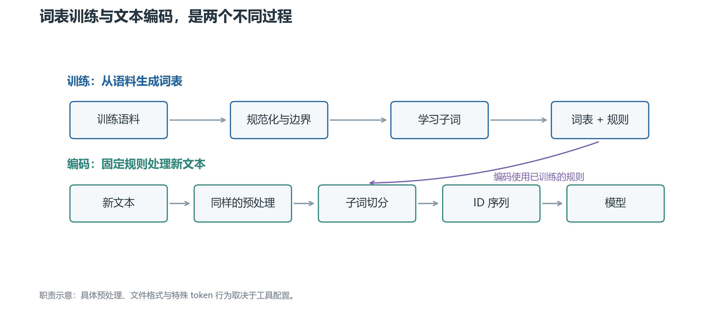
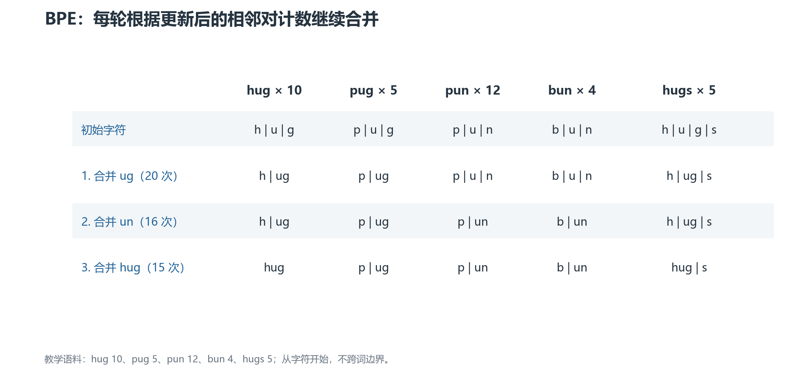
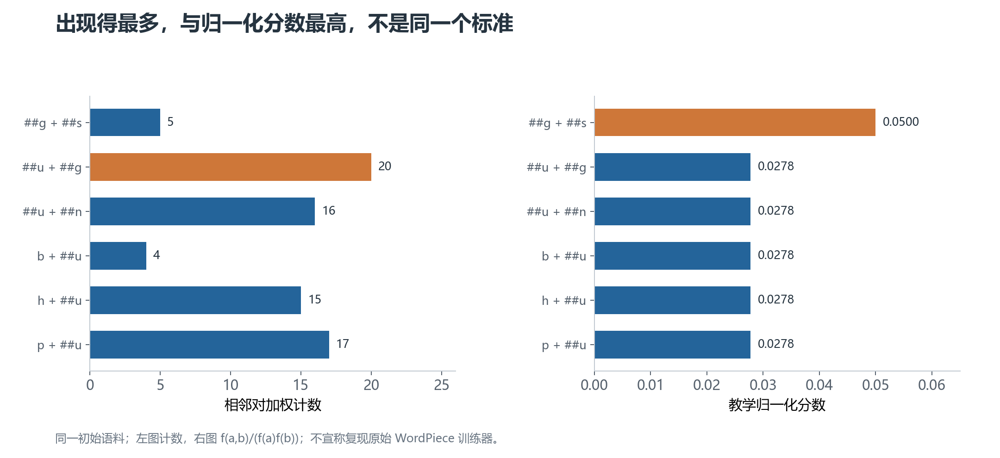
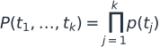
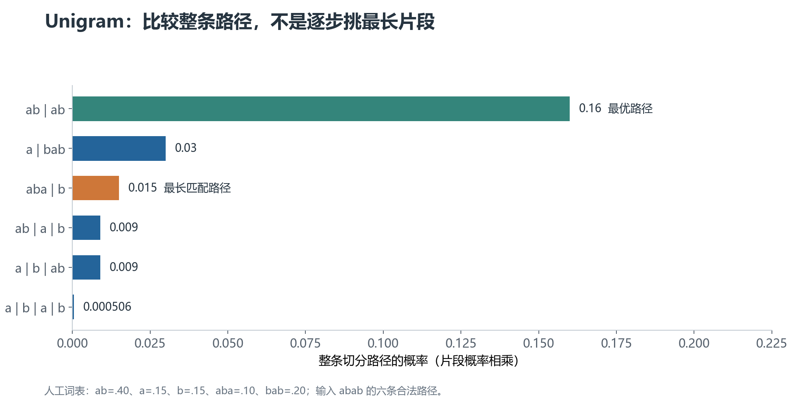
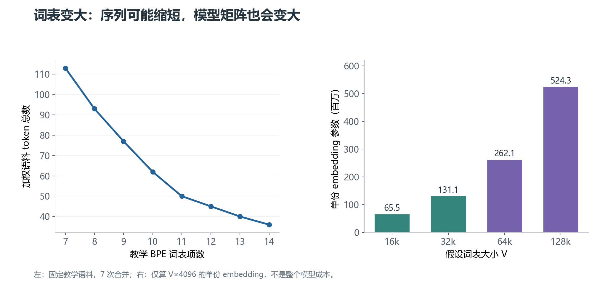
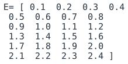
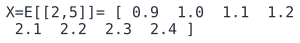

Tokenization 算法
与词表生成机制
词表是怎么学出来的？新词又怎样切分？从一份可以手算的小语料开始，理解 BPE、WordPiece 与 SentencePiece。
SentencePiece 是工具，可使用 BPE 或 Unigram。示例结果来自教学代码，不代表任何现成模型的词表。
01 · 文本怎样变成模型能接收的编号
一段文字进入语言模型之前，首先经过 tokenization（分词或标记化）：把文本拆成模型使用的基本单元，并转换成整数 ID。
这里的“分词”不一定是按自然语言里的完整词切分。playing 可以是一个 token，也可以是 play 和 ing；一个汉字可能是一个 token，也可能拆成多个字节 token。
1. 先分清字符、字节和 token
字符是文本中的符号，例如 A、中。处理 Unicode 时，还要区分字符编码的码点与人眼看到的字形；一个显示出来的字形可能由多个码点组成。
字节是计算机编码文本的基础单位。采用 UTF-8 时，A 通常占 1 字节，中 占 3 字节。一个字节不是一个汉字，也不是固定的一段意思。
Token是分词器选定的单元。它可以对应完整词、子词、字符、一个字节，或者一串字节。
因此，“一个 token 等于多少字”只能在指定模型、语言和文本上做统计，不能当作普遍换算关系。
2. 为什么通常不直接按完整词切分
如果每个完整词都占一个词表位置，英文的时态变化、专有名词，以及代码中的新标识符，会让词表不断膨胀。中文又没有天然的空格词边界。
另一端是只用字符或字节。这样基础单位少，但常见长词也需要很多 token，序列更长。
子词（subword）在两者之间取折中：把常见片段收进词表，不常见的字符串拆成较小片段。片段可以像词根、词尾，也可能只是一串常见字符，不保证有独立语言学意义。
3. 词表是什么，ID 又是什么
词表（vocabulary）是模型能够使用的有限 token 集合。每个 token 对应一个整数 ID，例如下面这个人为指定的词表片段：
| Token | ID |
|---|---|
play |
0 |
ing |
1 |
! |
2 |
如果分词结果是 play | ing | !，就可以编码成 [0, 1, 2]。这些数字只是编号，不表示“play 的意思比 ing 小”，也不是词频。
语言模型拿到 ID 后，查找 embedding（嵌入）：每个 ID 对应一行可学习的向量。通常先确定分词器与词表，再在模型训练中学习这些向量。
所以，词表生成与 embedding 学习是不同过程。分词器能把词切出来，并不说明模型已经理解了这个词。
4. 一个完整分词器通常有哪些步骤
先看流程中的职责，再讨论具体算法。

上半部分是训练分词器，下半部分是编码新文本。 词表与切分规则通过训练生成，之后供编码使用；不会为每一次用户输入重新生成一份词表。
规范化：先决定保留哪些文本差别
Normalization（规范化）可能包括大小写转换、Unicode 规范化等。例如把某些兼容字符转换成统一形式。
这样会减少表示差异，但也可能丢失信息。若把 Apple 改成 apple，解码后无法自动知道原来首字母是大写。
预切分：先划定局部处理范围
Pre-tokenization（预切分）可以按空格、标点或规则先把文本分段，然后在每段内部应用子词算法。
例如先把 hello, world 划成若干段，再对各段使用 BPE。普通的词内 BPE 不会跨已经确定的边界合并。具体边界取决于实现，不是 BPE 名字本身规定的。
有些系统直接处理规范化后的整段文本，不要求外部先做语言学分词。SentencePiece 属于这个方向，但它仍然可能根据空白、文字类型等配置约束候选片段。
子词切分与 ID 映射
BPE、WordPiece 或 Unigram 在这里决定：用词表中的哪些片段表示当前文本。
随后查词表得到 ID。为了完成这一步，通常不止需要一个 token → ID 字典；还可能需要合并顺序、概率分数、前缀约定等规则。
后处理与解码
后处理可能插入句首、句尾等特殊 token，或者组织多段输入。聊天模板还会加入角色和轮次结构，这不等于子词算法本身。
解码把 ID 转回文本，处理空白标记、字节拼接等细节。如果前面的规范化丢失了信息，或者解码主动跳过特殊 token，就不能保证还原原始输入的每一个字符。
5. “训练分词器”和“使用分词器”有什么区别
训练阶段读取语料，决定哪些片段进入词表，以及新字符串应该怎样切分。
使用阶段保持词表和规则固定，把新文本转为 ID。通常也叫 encode；反向过程叫 decode。
对于标准文本生成模型，输出层同样对应这份词表。模型每一步预测下一个 token ID，最后再解码为文字，并不是直接生成汉字或完整单词。
后文始终把这两条线分开讲：先问词表怎么来，再问固定词表如何使用。
下一章：BPE 与 WordPiece。
02 · BPE 与 WordPiece：合并什么，怎样切新词
BPE 和 WordPiece 都能从较小单元出发，逐渐加入更大的子词。但它们的训练选择和编码规则并不相同。
本章使用同一份小语料，实际计算计数。为方便观察，所有词已经转成小写并按词预切分，不跨词边界合并。
1. 一份可以手算的训练语料
| 词 | 出现次数 |
|---|---|
hug |
10 |
pug |
5 |
pun |
12 |
bun |
4 |
hugs |
5 |
“出现次数”会作为训练权重。例如 hug 的 h u g 这条序列，在统计时贡献 10 份计数。
相邻对指一条序列中左右相接的两个单元。h u g 有 (h,u) 和 (u,g) 两个相邻对。
2. BPE：先合并出现最多的相邻对
BPE（Byte Pair Encoding，字节对编码）最早用于数据压缩。应用到子词分词时，通常反复合并最常见的相邻单元。
名字里的“Byte”不表示所有 NLP 版本都从字节开始。本节从字符开始，下一章之后会说明字节级方案。
第一步：准备最小单元
词表最初包含语料用到的字符：b, g, h, n, p, s, u。
所有词都拆成字符。例如 hugs → h | u | g | s。
第二步：统计相邻对
u g 同时出现在 hug、pug 和 hugs 中，计数为 10 + 5 + 5 = 20。
其他候选包括 p u 的 17 次、u n 的 16 次，以及 h u 的 15 次。最高的是 u g，因此先加入新 token ug。
合并后：
hug → h | ug
pug → p | ug
pun → p | u | n
bun → b | u | n
hugs → h | ug | s
第三步：重算，继续合并
计数必须按新切分重新计算，不能沿用旧相邻对列表。
下一轮 u n 出现 16 次，因此合并成 un。再下一轮 h ug 出现 15 次，合并成 hug。

每一行都是上一轮更新后的结果。 新 token 来自统计，但不会自动删除基础字符。因此前三轮后，词表包含原来的 7 个字符，以及 ug、un、hug。
实际训练通常按目标词表大小或合并次数停止，也可能设最小出现频次等条件。候选计数并列时，具体实现的择优规则会影响结果。
3. BPE 编码不是简单的“找最长词表项”
词表固定后，BPE 还需要训练得到的 merge rank（合并优先级），通常由合并发生的先后顺序决定。
新词先拆成基础单元，然后按可用合并的优先级逐步合并。例如只使用上面三条规则，hugs 会先得到 h | ug | s，再得到 hug | s。
为什么词表字典本身还不够？看这个专门构造的小例子：
优先规则 1：b + c → bc
优先规则 2：a + b → ab
输入：abc
BPE 先应用优先级更高的 b+c，得到 a | bc。
如果只是从左往右选最长词表项，则会选 ab | c。两者不同，所以不能把 BPE 编码说成“最大匹配分词”。
4. WordPiece：为什么不是只看相邻对计数
WordPiece也是子词方案，BERT 的分词器是它的常见实例。
原始训练过程与语言模型似然有关。似然可以理解为：当前子词模型给训练语料赋予了多大的概率。更能解释语料的候选，可能比单纯出现多的候选更有价值。
这里有一条需要明确的边界：原始训练实现没有完整公开。很多教学材料用下列归一化分数说明合并偏好，但不能把它当成所有 WordPiece 训练器的精确公式。
f(a,b) 是相邻对的加权计数；f(a) 和 f(b) 是两个单元各自的加权出现次数。这里的分数是比较指标，不是一个合法的片段概率，也不能直接代替语言模型似然增益。
直观上：如果 a、b 到处都出现，它们碰到一起就不一定值得优先形成新 token；如果它们相对更常结伴，归一化后的分数可能更高。
5. 先介绍 ##，再看训练例子
典型 BERT WordPiece 用 ## 标记“这个片段接在词的中间”，例如 playing → play | ##ing。
## 是 token 字符串中的约定，不是原文中真的有两个井号，也不是所有 WordPiece 系统都必须采用的符号。
在我们的例子里，hugs 的初始形式是 h | ##u | ##g | ##s。词首 h 与词内 ##h 是不同的词表项。
同一语料为什么会得到不同选择
##u 出现 36 次，##g 出现 20 次，##s 出现 5 次。
##u ##g 出现 20 次，分数为 20/(36×20) = 1/36 ≈ 0.0278。
##g ##s 只出现 5 次，但分数为 5/(20×5) = 1/20 = 0.05。
所以按这个教学评分，先加入的是 ##gs，而不是 BPE 首轮的 ug。

左图看原始计数，右图看教学分数。 两套规则对同一个候选集合产生不同排序；这说明训练目标会改变词表，不是证明 WordPiece 永远优于 BPE。
继续训练时，同样要更新切分和计数。收进词表的子词也不一定是完整单词。
6. WordPiece 编码：从左到右贪心找最长匹配
贪心指每一步先选择当前看起来最合适的选项，不回头枚举整条字符串的所有切分。典型 WordPiece 使用最长前缀匹配。
假设固定词表包含：
play, ##ing, ##er, ##s, [UNK]
对 playing，从词首找最长可用片段，得到 play；剩余 ing 要按词内形式查询，找到 ##ing。结果是 play | ##ing。
这里不需要按训练时的合并顺序重新合并。BPE 编码依赖合并优先级，WordPiece 编码主要依赖词表及词首/词内约定。
匹配失败时会怎样
[UNK] 是 unknown token，即未知 token。
对 playz，虽然开头能找到 play，但剩下的 z 没有可用的 ##z。典型 BERT WordPiece 会把整个预切分单元输出为 [UNK]，不是保留 play 再只把 z 替换成未知符号。
具体系统可能采用不同回退策略，还可能限制单词长度；迁移时应检查真实实现。
7. 这两个方案怎样生成词表
两者通常都从基础单元开始，反复增加子词；区别在于候选选择的目标，以及生成词表后如何切分新文本。
BPE 常见的交付物是词表和有序合并规则。WordPiece 常见的交付物是词表，加上规范化、预切分、词内前缀和未知处理等配置。
只复制一份可见 token 列表，可能无法复制原分词器的完整行为。
03 · SentencePiece：工具、空白标记与概率切分
上一章讨论了两种子词方法。这一章先澄清名称：SentencePiece 是训练和使用分词器的工具，不是一种与 BPE 完全互斥的算法。
它支持 BPE、Unigram，以及字符、词级模型等选项。这里重点讲它的文本处理方式与 Unigram。
1. 为什么强调“从原始句子训练”
很多子词训练流程先按完整词切分，再在词内学习片段。对于没有自然空格词边界的中文、日文，这一步可能依赖语言专用分词器。
SentencePiece 可以直接从句子文本训练，不要求外部先给出语言学意义上的词边界。输入会经过它配置的规范化和训练规则。
“不要求外部分词”不等于“完全没有边界约束”。例如按空白、数字或文字类型约束候选片段的配置，仍然会影响哪些 token 能被学出来。
2. ▁ 是什么，为什么经常出现在词前
SentencePiece 常用 ▁（U+2581，下划块）作为空白的可见表示。它不是普通下划线 _。
比如，在一份假设词表中：
原文：I love NLP
内部示意：▁I▁love▁NLP
可能切分：▁I | ▁love | ▁N | LP
这些片段只是示例，不是指定 SentencePiece 模型的实测输出。
开头的 ▁ 不一定表示原文真的以空格开头。默认配置通常会添加一个 dummy prefix（虚拟前缀），让句首也能按类似词边界的形式处理。
这个标记可以被包含在一个更长 token 内，因此 ▁love 与 love 可能是不同词表项。
能否原样恢复所有空格
如果空白被作为符号保留下来，解码就更容易重建边界。但 SentencePiece 常用的默认规范化还会处理连续空白等差异，并采用基于 NFKC 的 Unicode 规范化。
NFKC是一种兼容性规范化：将某些外观或编码不同的兼容字符转换成统一形式。这可能改变原始文本。
因此，不能仅看到 ▁ 就承诺逐字符还原所有原始空白与字形。是否可逆，需要结合规范化、虚拟前缀与空白配置讨论。
3. SentencePiece 使用 BPE 时，学的仍是合并规则
选择 model_type=bpe，核心仍然是相邻单元的统计合并。
区别是它把文本处理、空白标记、训练、模型文件与解码整合到同一工具中。生成的词表可能带有 ▁，而不是 BERT 式的 ##。
算法相同，不代表配置相同或输出相同。 预处理、基础单位、边界约束、语料与目标词表规模变化，都可能改变结果。
4. Unigram：先给每个片段一个概率
Unigram（单元语言模型）在这里是假设每个子词独立出现的概率模型。它用于判断切分，不是说后面的 Transformer 也不看上下文。
假设某条切分得到片段 t₁, t₂, …, tₖ，每个片段有概率 p(tⱼ)。这条切分路径的概率是：

右侧的乘积符号表示把所有片段的概率相乘。片段概率属于分词器模型，与大模型预测下一个 token 的概率不是同一份参数。
同一字符串可能有多条合法切分。Unigram 通常选择路径概率最高的一条，而不是每一步都挑最长片段。
5. 一个例子：最长片段不一定组成最好路径
假设只有下面五个候选，概率人为指定并且总和为 1：
| 片段 | 概率 |
|---|---|
ab |
0.40 |
a |
0.15 |
b |
0.15 |
aba |
0.10 |
bab |
0.20 |
要切分 abab，如果从左往右贪心找最长片段，会得到 aba | b，路径概率为 0.10×0.15 = 0.015。
但 ab | ab 的概率为 0.40×0.40 = 0.16，明显更大。

图里比较完整路径，而不是单个 token。 a | bab 的概率是 0.03，也高于最长匹配路径。最优结果要综合后续位置能如何切分。
工程实现通常用 动态规划：在每个字符位置保留最佳前缀结果，并向后扩展合法片段。它避免为长字符串显式枚举指数增长的全部路径。这类最大概率路径搜索常叫 Viterbi 解码。
计算时通常将概率转为负对数成本，乘积变成加和，选最大概率就等价于选最小成本。具体推导不是理解词表生成的前提。
6. Unigram 词表如何生成：从大候选集逐步删减
与 BPE 常见的“逐步添加”不同，Unigram 通常先准备一份比目标词表更大的候选集合。
准备候选片段
从语料中抽取候选子串，同时保留必要的基础字符等单位，使文本仍有切分路径。
这里的“必要”取决于字符覆盖与回退设置，不是声称任意 Unicode 字符都已经在候选集内。
根据可能切分估计概率
当前词表会让一个句子存在多条切分。训练不能简单假定最长匹配就是唯一真实切分，而是考虑各种路径对语料概率的贡献。
一句话的概率通常要把所有合法切分路径的概率加起来：
x 是输入字符串；S(x) 是所有合法切分的集合；z 是其中一条路径；t 是路径中的某个 token。重复出现的 token 会重复贡献乘积。
这里用“所有路径概率之和”估计语料解释能力，而上一节编码时用“概率最大的路径”。训练目标与最佳路径解码不是同一个运算。
常见训练过程通过 EM（期望最大化）交替更新：先根据当前概率，估计不同切分中各片段的使用量；再据此更新片段概率。训练使用高效算法累加路径贡献，不需要把所有路径逐条列出来。
评估删除候选的代价
可以用训练语料的负对数似然作为损失：
wₓ 是该句子的出现次数或权重，log 是自然对数。取对数可以把概率乘积转换成加和；加上负号后，概率越低，成本越高。
考察删除一个片段之后，其他切分能否较好地替代它，以及损失增加多少。代价小的片段更可能被删；必要的字符或控制符则可能受保护。
具体训练器使用高效的近似评估与批量裁剪，不是每次删除一个片段都完整重训所有候选。
裁剪、重估，直到达到目标规模
删掉一部分候选后，重新估计概率，再继续裁剪，直到得到目标词表。
所以最终留下的不是简单的“全语料出现最多的前 N 个子串”，而是能够共同解释语料的片段集合。
7. 为什么同一文本有时会得到不同切分
默认编码通常选择最佳路径，是确定的。训练时也可以从可能路径中采样，让同一句话以不同子词组合出现。
这种 subword regularization（子词正则化）用切分变化增加训练输入的多样性。BPE 也有通过随机跳过合并实现的 BPE-dropout，两者机制不同。
如果评测需要可复现的 token 数，必须确认是否关闭了采样。不能把采样结果当成固定分词器每次必然的输出。
下一章：词表生成与工程实践。
04 · 词表生成：算法之外还有哪些决定
选定 BPE、WordPiece 或 Unigram，只决定了部分训练行为。语料组成、规范化、字符覆盖和词表规模同样会改变结果。
一个实用问题是：怎样生成适合中文、英文和代码混合场景的词表，又怎样知道它确实合适？
1. 从训练目标出发选语料
分词器会把词表位置分配给训练语料中的片段。如果语料主要是英文，英文片段更容易获得较长 token；低比例语言可能更多依赖短片段。
因此先决定要服务哪些语言和领域，再进行抽样、去重和配比。中文、代码、数学表达、数字、罕见人名等，可以各自准备独立验证样本。
不能只把语料按文件大小拼起来。重复网页、模板和垃圾字符串可能抢占词表位置。清洗方式也要记录，否则后续难以复现词表。
分词器验证集应与训练语料隔离，以检查新词、陌生脚本和实际输入形式的处理情况。
2. 固定预处理：它决定算法实际看到什么
先明确大小写是否保留、Unicode 如何规范化、连续空格和换行如何处理，以及是否先按空格或标点划分片段。
对代码而言，大小写、缩进、换行可能有实际意义；对标识符而言，Foo 与 foo 也可能不是同一个对象。不能因为某种清洗能减少词表，就默认它适合所有任务。
这些配置需要同时用于训练和编码。训练看到一种文本形式、上线看到另一种形式，会引入不必要的差异。
3. 先确定基础覆盖，再谈大子词
字符覆盖率
字符覆盖率通常指保留的字符覆盖了训练语料中多少字符出现次数，而不是覆盖了多少种 Unicode 字符。
一个罕见字符可能因目标覆盖率而被排除。降低覆盖率能节省基础词表位置，但若没有回退机制，遇到它时可能输出未知 token。
字节级 BPE
字节级 BPE 从 UTF-8 字节出发，而不是直接从 Unicode 字符出发。一个完整的 256 字节基础集合，可以表示任意有效 UTF-8 文本所需的字节。
某些实现会把字节映射成可打印的 Unicode 符号，方便存储和展示。因此可见词表项不一定就是原文里的字符。
字节可以继续合并成较长 token。例如 中 的 UTF-8 字节为 E4 B8 AD，但是否恰好占 3 个 token，要看这三个字节有没有形成已学到的合并。
一个 token 也可能只包含一个汉字的部分 UTF-8 字节，单独显示时不是完整字符。解码要先拼接完整字节流，而不是逐个 token 独立当作 UTF-8 文本解码。
Byte fallback：字符方案的兜底
Byte fallback（字节回退）与“始终从字节级基础单位开始”不同。它通常在字符/子词方案无法表示某字符时，把它退回对应的字节 token。
例如有些词表用 <0xE4> 这类形式展示字节项。仅加入 256 个普通字符串，还不等于实现了真正回退；训练和编码器必须支持并启用该规则。
SentencePiece 的 byte_fallback 是配置选项，不是所有 SentencePiece 模型的默认保证。这 256 个字节项也会占用词表预算。
字节覆盖可以减少未知文本问题，但不能恢复已经在规范化阶段丢掉的差异。
4. 特殊 token 从哪里来
特殊 token 不一定由统计合并学出。它们通常由配置、模型架构或任务约定保留。
[UNK]或<unk>：表示无法正常编码的单元。- BOS/EOS：句首或序列起始、序列结束标记。
- PAD：将不同长度样本对齐时使用的填充标记。
- 角色或任务标记：用于聊天轮次、工具消息或其他任务结构。
这些名字和 ID 不通用；某些模型也不使用其中某项。例如 PAD 是否存在、是否与 EOS 共用，要检查具体模型。
新增一个特殊字符串时，还要决定是否作为不可拆分单元、是否自动插入、解码时是否跳过。特殊 token 的行为来自配置，不是因为字符串看起来有尖括号就自动生效。
5. 词表规模怎样影响序列长度与成本
更多词表位置可以容纳更多长片段，但并不保证所有文本都用更少 token，更不保证模型一定更好。
先看一份确定的教学语料。在 BPE 训练中逐步加入合并，观察同一语料的 token 总数如何变化。

左图的下降来自实际运行教学 BPE，不是模型性能实验。 它反映这份训练语料受合并影响后的长度，不能直接推断陌生语料也按同样幅度下降。
词表也占模型参数
设词表大小为 V，模型隐藏维度为 D，输入 embedding 大约需要：
如果 V = 32,000、D = 4,096，就是约 1.31 亿个参数。只存一份 BF16 权重时，每参数 2 字节，约为 262 MB；这不含梯度、优化器状态和其他模型层。
BF16是一种占 2 字节的浮点数格式。这里用十进制 MB 表示存储量，不与二进制 MiB 混用。
输出预测也通常需要把隐藏向量映射到 V 个候选 token 的分数。如果输入 embedding 与输出权重绑定，可以共享一份权重；不绑定时通常还要额外一份类似规模的矩阵。具体架构可能有例外。
图的右半部分只计算一份 embedding 的参数量，未把它当作整个模型的参数总数。
较大词表并非总是合算
常见长片段可以减少序列长度，进而影响上下文利用和注意力成本；较大词表同时增大 embedding 和输出层，并把训练出现次数分散到更多 token 上。
一些罕见片段即使进入词表，也可能没有足够训练信号学好对应向量。评估应同时考虑 token 效率、语言覆盖和模型成本，而不是只追求更大的数字。
6. 词表生成后，要交付什么
至少保存能够恢复完整编码/解码行为的模型文件与配置。
BPE 的独立实现可能使用 vocab.json 与 merges.txt；WordPiece 常见文本词表；SentencePiece 常见 .model 与可读 .vocab。这些是常见形式，不是所有工具必须采用的文件名。
可读 .vocab 通常不足以替代 SentencePiece 的完整模型文件，因为规范化、片段类型和其他配置也需要保存。
如果使用 tokenizer.json 等整合格式，同样要核查它是否连同特殊 token 配置、聊天模板和模型需要的附加文件完整交付。
ID 分配也要固定下来。它不是由“词频越大 ID 越小”这一普遍规则决定的；特殊 token 顺序和训练器实现都可能影响编号。
7. 换词表为什么会影响已有模型
已经训练好的模型，其 embedding 和输出权重按原 ID 排列。把一个词表字符串换成另一个，或者重新排列 ID，会改变编号对应的意义。
即使两份词表大小相同，也不能直接互换。
如果只是追加新 token，通常需要扩大输入/输出矩阵，并通过训练让新行得到有用表示。还要检查新 token 是否改变原文本的切分；更长片段可能优先匹配，从而影响原有输入。
从头更换分词器，则通常需要权重映射、进一步训练或重新训练。它不是“改一个词表文件”就能完成的维护操作。
8. 怎样评测生成的词表
先按中文、英文、代码、数字和特殊文本分别测，不用一个混合平均值掩盖局部问题。
推荐记录以下项目：
| 项目 | 它回答什么 |
|---|---|
| Token 数与长度分布 | 同一验证文本会占多少上下文位置 |
| 未知 token 与字节回退比例 | 哪些内容没有获得常规子词覆盖 |
| 解码一致性 | 能否还原预期保留的内容与空白 |
| 编码/解码速度 | 分词本身是否成为数据管线瓶颈 |
| 下游任务结果 | 接入或训练模型后，实际能力是否改善 |
“每词多少 token”适合有明确定义的词边界时比较；中文与混合文本可以补充每字符、每 UTF-8 字节等指标。比较时固定规范化、文本集合与计数方式。
困惑度也不能无条件跨分词器直接比较，因为 token 单元改变了。若要比较语言建模效率，可以采用统一的字符/字节归一化等评测设计，而不是只看每 token 的分数。
9. 用一句话分别记住这些名称
BPE：常见训练方式是从小单元开始按相邻对频次合并，编码遵循合并优先级。
WordPiece：训练偏向能改善子词模型的候选；典型编码是带词内约定的最长前缀匹配。归一化合并分数属于教学近似。
Unigram：从较大候选集出发估计片段概率并裁剪，编码通常选择整条字符串的最佳概率路径。
SentencePiece：把规范化、空白处理、训练、编码和解码整合起来的工具，可选择 BPE 或 Unigram 等模型。
最后阅读：可复现实验与参考资料。
05 · 可复现实验与进一步阅读
文中的关键数值来自本专题的教学代码。代码帮助核对机制，不冒充生产级分词器，也不把模拟词表当作真实模型配置。
1. 运行例子
在资料库根目录执行：
python notes/foundations/tokenization/src/demo.py
程序输出并检查四个例子：
- 同一加权语料上的 BPE 前三轮合并。
- WordPiece 教学归一化分数与第一轮选择。
- 固定词表下
playing的最长匹配，以及playz的整词未知处理。 abab的所有 Unigram 路径与动态规划最优路径。
还比较 BPE 合并优先级与最长匹配在 abc 上的差别。
demo.py 不实现生产系统的完整规范化、Unicode 字节映射、特殊 token、SentencePiece EM 训练或高性能切分。WordPiece 的训练部分明确采用教学评分近似。
2. 重建插图和阅读版
python notes/foundations/tokenization/src/build.py
生成五组 PNG/SVG 插图、公式 SVG、阅读版.html 和 src/example-results.json。正文修改后应重新构建，避免 Markdown 与阅读版不一致。
图 1 是职责流程示意；图 2、3、4 来自教学语料与指定概率；图 5 左图来自同一教学 BPE，右图按 V×D 计算参数量。均不对应真实语言模型的性能测量。
3. 真正训练一个 SentencePiece 模型
上面的教学代码方便看清机制。真正生成可使用的模型文件，可以安装 sentencepiece，将真实语料准备为 UTF-8 文件，每行一条训练样本，再使用官方训练器。
下面是配置起点，未在本专题的小语料上执行，不是已经调优的训练配方：
from pathlib import Path
import sentencepiece as spm
Path("outputs").mkdir(exist_ok=True)
spm.SentencePieceTrainer.train(
input="corpus.txt",
model_prefix="outputs/tokenizer",
model_type="unigram", # 改为 "bpe" 可训练 SentencePiece BPE
vocab_size=32000,
character_coverage=0.9995, # 按真实语料与覆盖需求调整
byte_fallback=True, # 启用字节回退，需预留 256 个词表项
)
tokenizer = spm.SentencePieceProcessor(model_file="outputs/tokenizer.model")
text = "我正在学习 Tokenization。"
pieces = tokenizer.encode(text, out_type=str)
ids = tokenizer.encode(text, out_type=int)
print(pieces)
print(ids)
print(tokenizer.decode(ids))
训练会生成 .model 与 .vocab。实际切分取决于语料和配置，这里不预先编造输出。
默认规范化、空白处理和特殊 ID 也需要核查。语料过小，或者基础字符、字节项和特殊 token 占满预算时，目标词表大小可能不适用，训练器可能报错；这时应根据语料与预算调整，而不是只改一个更大的数字。
已有语言模型通常使用它随模型发布的分词器。这个模板适合学习或新模型的数据准备，不表示可以直接替换现成模型的原词表。
4. 原始论文
- Sennrich 等，Neural Machine Translation of Rare Words with Subword Units（2016）：子词 BPE 在神经机器翻译中的应用。论文
- Schuster 与 Nakajima，Japanese and Korean Voice Search（2012）：WordPiece 的早期资料。DOI
- Devlin 等，BERT: Pre-training of Deep Bidirectional Transformers for Language Understanding（2019）：BERT 的 WordPiece 使用方式。论文
- Kudo，Subword Regularization: Improving Neural Network Translation Models with Multiple Subword Candidates（2018）：Unigram 与子词切分采样。论文
- Kudo 与 Richardson，SentencePiece: A simple and language independent subword tokenizer and detokenizer for Neural Text Processing（2018）：SentencePiece 工具及设计。论文
5. 实现与教学资料
- SentencePiece 官方项目：模型类型、规范化、空白处理与训练接口。
- SentencePiece 训练配置定义：字符覆盖、词表、回退与其他选项的实现定义。
- Hugging Face：BPE：计数、合并与编码示例。
- Hugging Face：WordPiece：归一化评分的教学解释及原始训练实现未完整公开的说明。
- Hugging Face：Unigram：概率路径和候选裁剪的教学解释。
- BERT 原始 tokenization.py：最长匹配、
##和整单元未知处理。
本次编写读取了 SentencePiece 官方 README，以及上述 Hugging Face 的 BPE、WordPiece、Unigram 教学页面。具体工具配置随版本变化，实际实验仍需记录依赖版本与训练参数。
6. 为自己的词表保留一份训练记录
记录语料来源与配比、清洗方式、规范化与边界规则、算法与工具版本、目标词表大小、字符覆盖与回退设置、特殊 token 和 ID，以及独立验证结果。
这些信息与生成的模型文件一起保存，才能回答“为什么这一段被切成这样”，也才能在以后复现词表。
06 · 面试深度：从“会用”到“能解释为什么”
前五章适合建立直觉。本章把面试里容易被追问的边界单独列出来。回答时先给结论，再说明假设，最后说实现差异。
1. BPE 训练和编码的复杂度怎么说
设训练语料展开后有 T 个基础单元，最终词表需要进行 M 次合并。
最朴素的 BPE 每轮扫描全部序列、重新统计相邻对，再找最高频的一对。粗略复杂度可写成 O(MT)，因为每轮都可能接近扫描一次语料；真实实现会维护 pair count、倒排位置和优先队列，减少重复工作。
这里的复杂度不是一个严格适用于所有库的上界。数据结构、并行方式、是否对每轮全量重算，都会改变实际表现。面试中说清楚“朴素实现”和“工程实现”的区别，比背一个固定复杂度更重要。
编码阶段，BPE 需要按照 merge rank 反复寻找当前可合并的相邻对。使用堆或链表维护局部变化，可以避免每次从头扫描；直接用字符串暴力匹配则可能在长输入上变慢。
WordPiece 的典型编码是对每个预切分单元做最长前缀搜索。若单词长度为 L，最朴素实现会尝试 L、L−1、… 个前缀，并查哈希表，单词级别大约是 O(L²)；限制最大 token 长度、Trie 或专门的词表索引可降低常数。
Unigram 编码通常是动态规划。设字符串长度为 L，平均每个位置尝试 K 个候选片段，最朴素的路径搜索约为 O(LK)；候选索引和最大 token 长度会决定实际速度。
2. BPE、WordPiece、Unigram 的面试版区别
BPE通常从小单元逐步添加合并结果。训练的局部选择常基于相邻对频次，编码依赖合并优先级。
WordPiece也通常逐步扩展词表，但常见教学规则用归一化 pair score 选择候选，编码时做词首/词内约定下的最长匹配。Google 没有完整公开原始 WordPiece 训练器，因此不要把教学 score 说成官方唯一实现。
Unigram先准备较大的候选集，再用概率模型和损失裁剪候选。编码是整条字符串的最佳路径，可以用 Viterbi 动态规划求解。
SentencePiece是一个工具与模型文件生态，可以选择 BPE 或 Unigram。面试中如果把“SentencePiece”和“BPE”当成互斥算法，通常说明没有区分工具层和算法层。
3. 为什么 token 数会影响模型成本
分词器把同一文本切成更多 token，会直接增加序列长度 L。标准全注意力的计算和中间存储与 L² 有关；前馈网络、Q/K/V 投影等部分大致随 L 线性增加。分词更紧凑可能降低注意力部分成本，但较大词表会增加 embedding 和输出层参数。
因此不能只说“token 越少越好”。要同时考虑语言和领域的长度分布、embedding/输出矩阵、训练吞吐、罕见字符串覆盖，以及 token 边界对模型学习的影响。
4. Unicode、字节和“可逆”到底怎么回答
UTF-8 把一个 Unicode 码点编码成 1 到 4 个字节，但 token 可以覆盖任意字节片段。一个字节 token 不一定能独立解码成合法字符，必须先按顺序拼接完整字节流。
“可逆”至少有三层含义：子词拼接后能否还原规范化后的字符串；空白、大小写和控制符是否被保留；规范化前的原始 Unicode 表示是否也能还原。SentencePiece 的空白标记和字节回退有助于前两层，但 NFKC、大小写处理或特殊 token 跳过可能改变原文。
5. 训练数据泄漏会怎样污染词表
词表训练不是模型参数训练，但它仍然会看到语料。若把下游验证集、测试集或未来数据加入词表训练，至少会泄漏字符/片段分布信息，导致 token 长度和覆盖率评估偏乐观。
训练 tokenizer 时还要防止把清洗规则、聊天模板、特殊标记和普通文本混在一起。否则模板片段可能占用词表位置，真实用户文本反而得不到同样收益。
6. padding、truncation 和 attention mask 不是分词算法
分词把文本变成 token ID；padding把不同长度的 ID 序列补到同一长度；truncation在超过上限时截断；attention mask告诉模型哪些位置是真实 token、哪些位置是 padding 或不可见位置。
它们经常出现在同一个 tokenizer API 里，但职责不同。面试中要能把“编码”和“batch 对齐”分开。对于 decoder-only 模型，左 padding/右 padding 会影响生成位置和 batch 行为，具体取决于模型与推理实现。
7. 特殊 token 与高频追问
[UNK]、BOS、EOS、PAD 的 ID 可能不同，也可能某些项不存在或共享。新增 special token 后，必须同步更新 tokenizer 配置、embedding/输出矩阵以及训练模板。
为什么不用按词分词？ 词表会因形态变化、专有名词和多语言边界迅速膨胀；子词在覆盖率、序列长度和词表规模之间折中。
为什么 BPE 合并顺序重要？ 同一词表下，不同相邻对的竞争会产生不同切分；merge rank 是编码规则的一部分。
换词表能直接加载原模型吗？ 不能保证。ID、切分边界、embedding 和输出权重必须保持一致；更换词表通常需要扩展/映射权重并继续训练，严重时需要重新训练。
为什么不同库切分结果不一样？ 规范化、预切分、空白表示、特殊 token、词表文件、版本和 fallback 配置任一项不同，都可能改变结果。
8. 最容易答错的地方
- 把 token 当成字符或单词的固定换算单位。
- 把 SentencePiece 说成独立于 BPE/Unigram 的第四种算法。
- 把 WordPiece 教学 score 说成完整公开的官方训练公式。
- 只比较 token 数，不考虑词表参数量和语言覆盖。
- 只保存 token 字符列表，不保存 merges、规范化、特殊 token 和 ID 配置。
- 把 padding/truncation/mask 误称为分词算法。
能同时说出机制、假设、复杂度、工程边界和验证方法，回答才算达到面试强度。
07 · Token 向量化：从 ID 到 Transformer 输入
分词结束后得到的是整数 ID，例如 [2, 5, 1]。模型不能把整数编号当作有大小关系的连续特征直接使用：ID=5 并不比 ID=2 “更像”某个词。
下一步是 embedding lookup（嵌入查表）：把每个 ID 映射成一个可学习的稠密向量。它看起来像矩阵乘法，但实现上通常是按行索引，避免真的把 one-hot 向量完整构造出来。
1. 先准备一个能手算的例子
假设词表有 6 个 token，模型隐藏维度 d_model=4。embedding 矩阵 E 的形状是 [6,4]：

第 0 行对应 ID 0，第 1 行对应 ID 1，以此类推。这里的数值故意简单，真实 embedding 是训练得到的浮点参数。
现在分词器输出：
文本： hello world
Token： hello | world
ID： 2 | 5
向量化就是取 E 的第 2 行和第 5 行：

输出 X 的形状是 [2,4]：2 个 token，每个 token 一个 4 维向量。
2. 为什么查表等价于 one-hot 乘矩阵
ID 2 可以表示成长度为 6 的 one-hot 向量：
如果把它当作行向量，乘以 E：
所以 one-hot 乘 embedding 矩阵的结果就是对应行。查表实现只做这次索引，不创建长度为词表大小的 one-hot，节省时间和显存。
这也解释了为什么 ID 数值本身没有语义：one-hot 只用来选择行，ID 的大小不会进入点积或距离计算。
3. embedding 为什么是可学习的
初始化时，E 的每一行通常是小的随机数。训练时，语言模型根据预测损失反向传播，更新实际被使用的行。
例如输入 ID 2 参与了当前 batch 的预测，它对应的 embedding 行和后续层参数都会收到梯度。没有出现在 batch 里的行，通常不会从这一步得到梯度。
embedding 行不是分词器根据词义写出来的，也不是训练 tokenizer 时生成的数值。分词器决定“ID 2 是哪个 token”，模型训练决定“ID 2 对应的向量长什么样”。
4. 一个 token 如何进入第一层 Transformer
查表得到 X_token 之后，还要处理位置信息。不同模型的方式不同：
- 绝对位置 embedding：把 token 向量和位置向量相加；
- RoPE：先用 token 向量经过 Q/K 投影，再在 Attention 中旋转 Q/K；
- 其他相对位置方案：在 Attention 分数中加入位置偏置或采用其他变换。
不能把所有模型都写成 embedding + position_embedding。如果使用 RoPE，输入隐藏状态通常还是 token embedding，位置信息在后续 Q/K 上注入。
以绝对位置 embedding 为例，假设位置 0 的向量是 p₀=[0.01,0.02,0.03,0.04]，则：
这个相加要求两者形状相同。之后 h₀ 会进入 Transformer block，而不是直接被当作 logits。
5. 从一个 token 到一个 batch：形状如何变化
假设 batch 中有 B=2 条样本，每条 padding 到 L=3，词表大小 V=6，隐藏维度 D=4：
input_ids [B, L] = [2, 3]
embedding E [V, D] = [6, 4]
lookup 输出 [B, L, D] = [2, 3, 4]
attention mask [B, L] = [2, 3]
input_ids[b,t] 选择 E 的第几行，得到 hidden[b,t,:]。padding 的 ID 也会查出一个向量，但 attention mask 和 loss mask 要确保它不被当成真实内容使用。
如果模型使用 tied embeddings（输入 embedding 与输出 softmax 权重共享），同一矩阵 E 还会参与从隐藏状态计算词表 logits：
h 是 [D]，Eᵀ 是 [D,V]，所以 z 是 [V]，表示下一个 token 的每个候选 ID 的分数。这里的 logits 还不是概率，要再经过 Softmax 或采样策略。
6. 为什么模型输出的是 token ID，而不是直接输出文字
最后一层通常输出词表大小的 logits。模型选择下一个 token ID 后，分词器负责把 ID 解码为 token 字符串，再把字节或空白标记还原成文本。
所以生成链路是：
文本 → tokenize → token IDs → embedding → Transformer
← decode ← token IDs ← 采样 logits ← Transformer
模型内部主要在离散 ID 的 embedding 空间和隐藏空间里计算；“人看到的文字”只在输入编码和输出解码边界出现。
7. 向量化相关的面试追问
为什么不用把 ID 除以词表大小得到一个数字？ 这样会给 ID 强行引入没有意义的顺序关系；embedding lookup 允许每个 token 学习独立向量。
embedding lookup 和 one-hot 乘矩阵是否完全相同？ 数学结果相同，工程实现通常不显式创建 one-hot。
为什么词表变了，原 embedding 不能直接复用？ 因为 ID 到 token 的映射可能改变，原矩阵每一行的语义对应关系也随之改变。
padding 的 embedding 会不会产生梯度？ 取决于 loss mask、attention mask 和实现是否冻结 pad 行；不能只看 pad ID 的名字判断。
RoPE 是不是加到 embedding 上？ 标准 RoPE 通常不直接加位置向量，而是在 Attention 中对 Q/K 做位置相关旋转。
下一步可以回到 Attention 的缩放点积，看这些 hidden states 如何生成 Q/K/V。